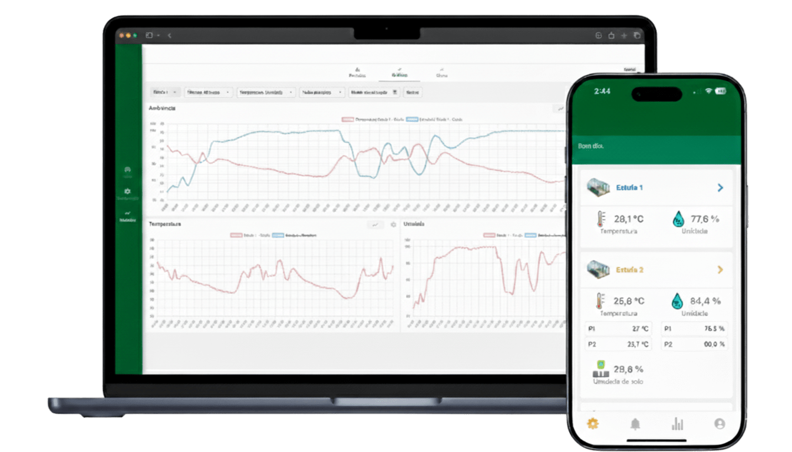
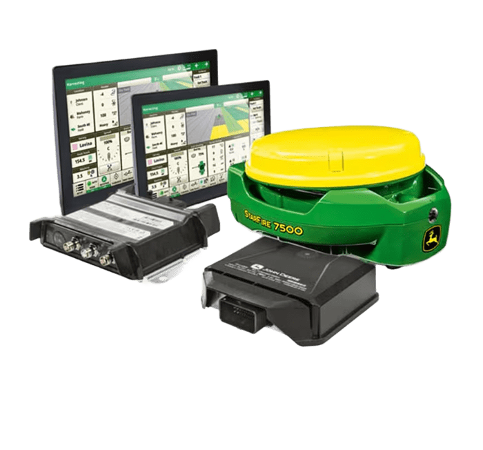

Bem-vindo à FloraTech!
Sua plataforma gestora de estufas
Aqui você poderá monitorar sua estufa em tempo real, visualizar gráficos
e gerenciar seus dados de plantio.
Aqui você poderá monitorar sua estufa em tempo real, visualizar gráficos
e gerenciar seus dados de plantio.

O kit de monitoramento de estufas FloraTech foi desenvolvido para proporcionar um acompanhamento preciso e seguro das variáveis da sua plantação. Ele utiliza sensores de alta confiabilidade para medir dados essenciais, como umidade do solo, temperatura, pH do solo, pH da aguá do reservatório, entre outras informações relevantes.
kit personalizado FloraTech é projetado sob medida para atender às necessidades específicas de cada cliente. Sua montagem é totalmente adaptável, permitindo a seleção dos sensores, componentes e recursos mais adequados ao tipo de cultivo e às condições da estufa. Essa personalização garante um monitoramento preciso, eficiente e alinhado às particularidades de cada ambiente agrícola.

Web
Gráficos dos dados
Mobile
Estamos presentes em todo o Brasil. Atendemos principalmente, fruticultores, agroindústrias, cooperativas e multinacionais com pesquisas no nosso país.
+1.000
Usuários na plataforma
95%
De aprovação (NPS)
+32
Hectares mapeados